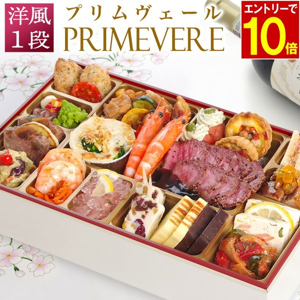
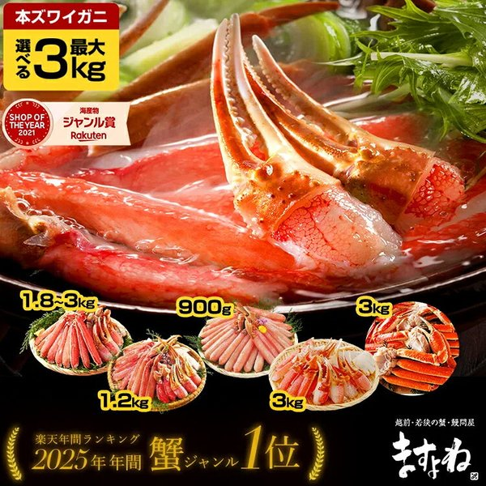
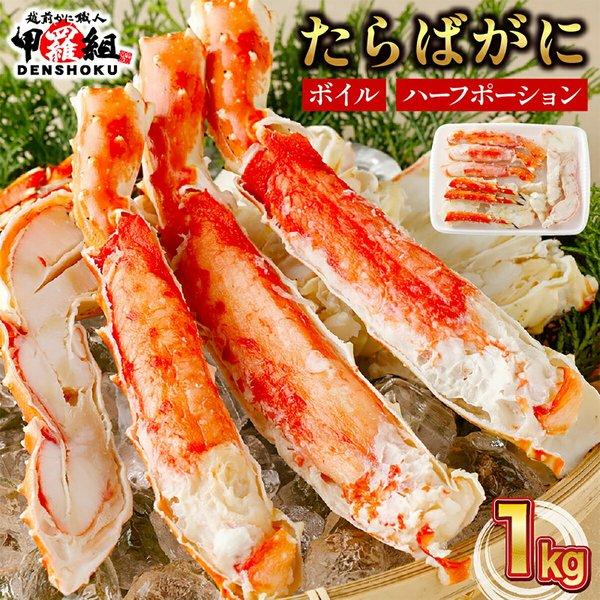
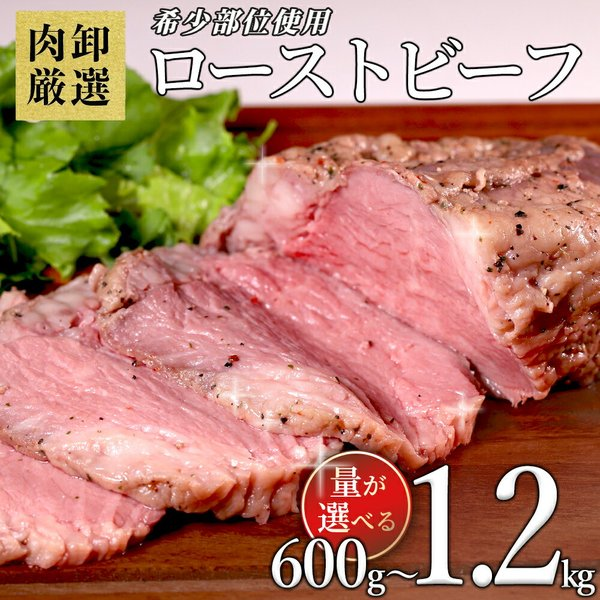
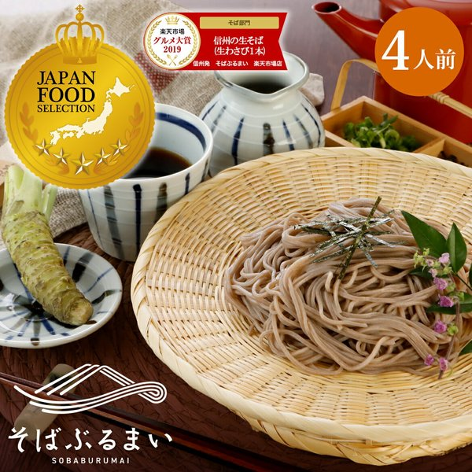
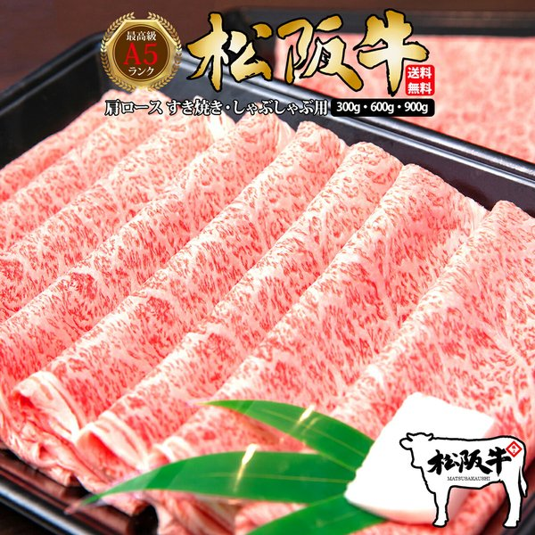
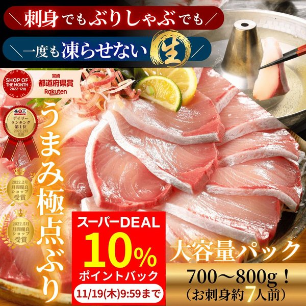
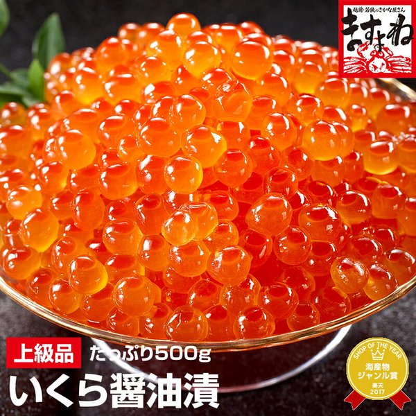
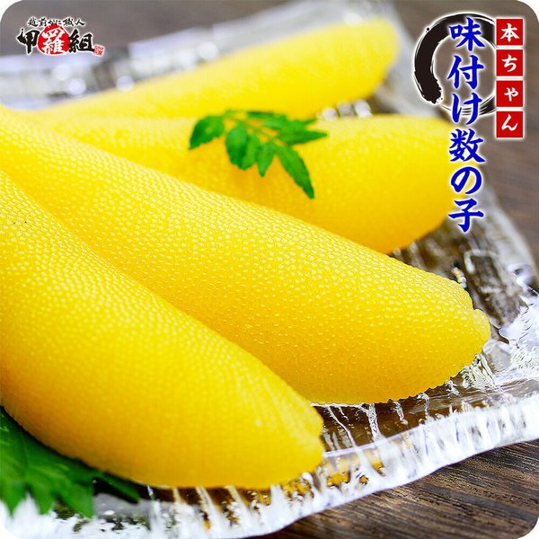

【2026年最新】おせち・カニ・年末ごちそうをお取り寄せ｜年越しグルメ10選
年末のごちそうは、買い出しに出る時間がもったいない。おせちやカニをお取り寄せにすると、届いた箱を冷蔵庫に入れておくだけで、大晦日と元日の食卓がほぼ完成します。
選ぶ軸は、人数に合う量か、食べ切れる期限か、そして手をかけるかどうか。生ずわい蟹やぶりしゃぶは鍋ひとつで済み、ボイル済みのたらば蟹は解凍するだけ。年末の忙しさに合わせて選ぶと失敗しません。
本記事では、楽天市場で人気・高評価の年末ごちそう＆お取り寄せグルメ10選を、実売価格とレビュー評価つきで写真付き紹介します。
- おすすめ10選 スペック・特徴比較表
- BEST 1｜謹製おせち「おもいやり」和風6.5寸三段重（全38品・3人前）
- BEST 2｜洋風おせち「プリムヴェール」1段重（2〜3人前）
- BEST 3｜選べるカニ福袋 メガ盛 生ずわい蟹 カット済みポーション（最大3kg）
- BEST 4｜ボイルたらば蟹 ハーフポーション1kg（半むき身）
- BEST 5｜訳ありローストビーフ ブロック（600g／800g／1kg）
- BEST 6｜信州の生そば 4人前（本わさび・特製つゆ付）
- BEST 7｜A5ランク 松阪牛 肩ロース すき焼き・しゃぶしゃぶ用（300〜900g）
- BEST 8｜うまみ極点ぶり 約700〜800g（ぶりしゃぶ用・柵）
- BEST 9｜北海道産 いくら醤油漬け 500g
- BEST 10｜味付け数の子 500g（一級品「本ちゃん」）
- 【読者負担0円】買わなくても得する無料サービス
- まとめ：年末ごちそう10選の選び方
| 順位 | 商品名 | ブランド | 最大の特徴・おすすめ理由 | 総合評価 |
|---|---|---|---|---|
| BEST 1 | 謹製おせち「おもいやり」和風6.5寸三段重（全38品・3人前） | 千賀屋 | 全38品・3人前で定番が一通り揃う | 4.44 |
| BEST 2 | 洋風おせち「プリムヴェール」1段重（2〜3人前） | フードスタジオ | 洋風の品揃えで子どもも食べやすい | 4.51 |
| BEST 3 | 選べるカニ福袋 メガ盛 生ずわい蟹 カット済みポーション（最大3kg） | カニ通販 ますよね | カット済みで下ごしらえが不要 | 4.32 |
| BEST 4 | ボイルたらば蟹 ハーフポーション1kg（半むき身） | たらば蟹 通販 | ボイル済みで解凍するだけ | 4.73 |
| BEST 5 | 訳ありローストビーフ ブロック（600g／800g／1kg） | ローストビーフ通販 | ブロックなので切り分け自由 | 4.72 |
| BEST 6 | 信州の生そば 4人前（本わさび・特製つゆ付） | そばぶるまい | 生そばで香りが立つ | 4.62 |
| BEST 7 | A5ランク 松阪牛 肩ロース すき焼き・しゃぶしゃぶ用（300〜900g） | 松阪牛専門店 | A5ランクの松阪牛 | 4.83 |
| BEST 8 | うまみ極点ぶり 約700〜800g（ぶりしゃぶ用・柵） | 鮮魚のうけぜき | 柵のまま届き切り方自由 | 4.82 |
| BEST 9 | 北海道産 いくら醤油漬け 500g | カニ・海鮮のますよね | 北海道産で粒が大きい | 4.55 |
| BEST 10 | 味付け数の子 500g（一級品「本ちゃん」） | 数の子通販 | 味付け済みで盛るだけ | 4.34 |
謹製おせち「おもいやり」和風6.5寸三段重（全38品・3人前）

千賀屋の定番おせち「おもいやり」。6.5寸の三段重に全38品を詰めた3人前で、伊達巻や栗きんとん、煮しめといった定番をひと通り揃えられます。冷蔵便で届くので、受け取ったあとは冷蔵庫で保管しながら元日から少しずつ食べられます。楽天市場での実売価格は約10,500円（2026年11月時点）。
- 全38品・3人前で定番が一通り揃う
- 冷蔵便で届き解凍の手間がない
- レビュー5,400件超の定番商品
- 三段重が入る冷蔵庫のスペースを確保しておく
洋風おせち「プリムヴェール」1段重（2〜3人前）

おせちに飽きがちな家族向けの洋風オードブル「プリムヴェール」。1段重にローストビーフやグラタン、オードブル系の品を詰め合わせた2〜3人前で、和風おせちと並べても食卓が華やぎます。冷凍で届くため、食べる前日に冷蔵庫へ移して解凍します。楽天市場での実売価格は約12,600円（2026年11月時点）。
- 洋風の品揃えで子どもも食べやすい
- 1段重で場所を取らない
- 冷凍保存で年末まで日持ちする
- 解凍に半日ほどかかるので前日から準備する
選べるカニ福袋 メガ盛 生ずわい蟹 カット済みポーション（最大3kg）

年末にいちばん売れたというずわい蟹の福袋。カット済みの生ポーションなので、殻をむいて鍋に入れるだけでカニしゃぶやカニ鍋が作れます。最大3kgの大容量で、大人数で囲む年越しやお歳暮の贈り先にも使いやすいセットです。楽天市場での実売価格は約14,960円（2026年11月時点）。
- カット済みで下ごしらえが不要
- 3kgまで選べる大容量
- レビュー4万6千件超の実績
- 冷凍庫に3kg分の空きが必要
ボイルたらば蟹 ハーフポーション1kg（半むき身）

すでにボイル済みのたらば蟹を、食べやすいハーフポーションにした1kg。解凍してそのまま皿に盛るだけで、太い身を堪能できます。殻むきの手間を省きたい人や、年末に手をかけずごちそうを出したい人に向いています。楽天市場での実売価格は約9,999円（2026年11月時点）。
- ボイル済みで解凍するだけ
- 半むき身で食べやすい
- 1kgで2〜3人のメインになる
- 解凍後は早めに食べ切る
訳ありローストビーフ ブロック（600g／800g／1kg）

赤身のブロックをそのまま低温で仕上げたローストビーフ。600g・800g・1kgから容量を選べ、切り分けるだけでクリスマスや年越しのメインになります。訳あり品なので形は不揃いですが、味と量を優先したい人には割安です。楽天市場での実売価格は約9,980円（2026年11月時点）。
- ブロックなので切り分け自由
- 容量を3段階から選べる
- 赤身で脂っこくない
- 訳ありのため形や大きさは不揃い
信州の生そば 4人前（本わさび・特製つゆ付）

年越しそばの定番としてグランプリを受賞した信州の生そば。4人前で、安曇野産本わさびと特製つゆが付いてくるので、届いたその日にゆでるだけで年越しの支度が整います。新そばの時期に合わせて注文したい一品です。楽天市場での実売価格は約3,620円（2026年11月時点）。
- 生そばで香りが立つ
- つゆと本わさび付き
- レビュー7,000件超の定番
- 生麺なので到着後は早めに食べ切る
A5ランク 松阪牛 肩ロース すき焼き・しゃぶしゃぶ用（300〜900g）

A5ランクの松阪牛肩ロースを、すき焼き・しゃぶしゃぶ用にスライスした300〜900g。霜降りの入った赤身で、割下と卵があれば自宅ですき焼きが完成します。年末のごちそうにも、お歳暮の贈り先にも選ばれている定番です。楽天市場での実売価格は約6,980円（2026年11月時点）。
- A5ランクの松阪牛
- すき焼きにもしゃぶしゃぶにも使える
- 容量を3段階から選べる
- 1人前あたりの単価は高め
うまみ極点ぶり 約700〜800g（ぶりしゃぶ用・柵）

脂ののったぶりを柵のまま冷蔵で届ける「うまみ極点ぶり」約700〜800g。薄く切ってさっと湯に通すぶりしゃぶにすると、脂の甘みが引き立ちます。切り方のレシピが付いているので、初めてでも扱いやすいです。楽天市場での実売価格は約12,500円（2026年11月時点）。
- 柵のまま届き切り方自由
- ぶりしゃぶ用のレシピ付き
- 冷蔵便で鮮度がよい
- 冷蔵品なので受け取り日の調整が必要
北海道産 いくら醤油漬け 500g

北海道産のいくらを醤油漬けにした500g。粒がしっかりしていて、ご飯にのせるだけで海鮮丼やちらし寿司の主役になります。年末年始に人が集まる日のために、冷凍でまとめて確保しておきたい一品です。楽天市場での実売価格は約14,799円（2026年11月時点）。
- 北海道産で粒が大きい
- 500gの大容量
- 海鮮丼やちらしにそのまま使える
- 冷凍庫のスペースを使う
味付け数の子 500g（一級品「本ちゃん」）

おせちの定番・味付け数の子を500gまとめて届けるセット。すでに味付け済みなので、袋から出して盛るだけでお重に入ります。価格を抑えたい年の瀬に、品数を増やしたいときの味方です。楽天市場での実売価格は約4,999円（2026年11月時点）。
- 味付け済みで盛るだけ
- 500gの大容量
- 5,000円を切る価格
- 味付けの濃さは好みが分かれる
この記事の商品を買う前に、まずは無料で得する選択肢をチェック。どれも登録・利用は0円で、無料期間中に解約すれば料金はかかりません。読みたい雑誌がある人、ポイントを貯めたい人、アンケートなら気軽という人、それぞれに合うものを選べます。
初回31日無料・無料期間中に解約すれば0円 → 楽天ポイントモール｜登録無料で毎日ポイ活
買い物なしでもポイントが貯まる無料サービス → 楽天インサイト｜アンケートに答えてポイント
登録無料・すきま時間のアンケートで貯まる → 楽天カード｜年会費永年無料
新規発行・年会費ずっと0円 →
4つのサービスの違いと使い分けは「出費0円で得する！買わずにポイントが貯まる無料サービス厳選4選」でまとめています。
💡 まとめ：年末ごちそう10選の選び方
年末のごちそうは、12月に入ると早割が終わって値が上がり、人気商品から売り切れます。だからこそ11月中に「おせち」「カニ」「肉か魚のメイン」の3つを決めておくのがいちばん確実です。冷凍で届くものは到着後すぐ冷凍庫へ、冷蔵のおせちは受け取り日を指定して、年末の冷蔵庫に余裕を持たせておきましょう。
楽天市場では「5と0のつく日」や「お買い物マラソン」などのキャンペーンに合わせて購入すると、ポイント還元が最大化してお得に手に入ります。ぜひチェックしてみてくださいね。